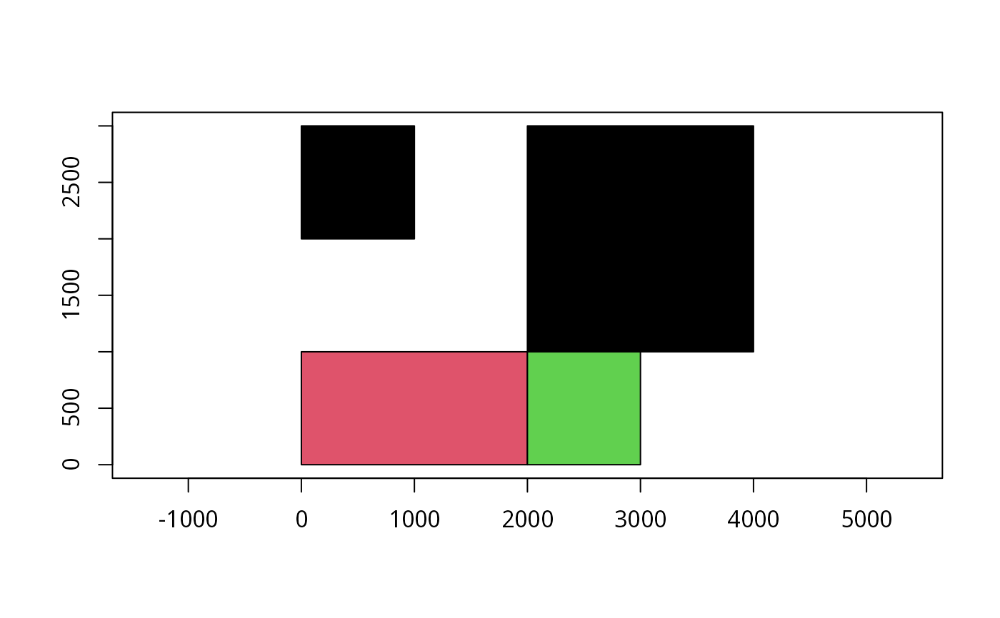

Read exported WinBUGS maps
readSplus.RdThe function permits an exported WinBUGS map to be read into an sp package class SpatialPolygons object.
readSplus(file, proj4string = CRS(as.character(NA)))Arguments
- file
name of file
- proj4string
Object of class '"CRS"'; holding a valid proj4 string
Value
readSplus returns a SpatialPolygons object
Note
In the example, taken from the GeoBUGS manual, the smaller part of area1 has a counter-clockwise ring direction in the data, while other rings are clockwise. This implies that it is a hole, and does not get filled. Errant holes may be filled using checkPolygonsHoles. The region labels are stored in the ID slots of the Polygons objects.
See also
Examples
if (rgeosStatus()) {
geobugs <- readSplus(system.file("share/Splus.map", package="maptools"))
plot(geobugs, axes=TRUE, col=1:3)
row.names(geobugs)
pls <- slot(geobugs, "polygons")
sapply(pls, function(i) sapply(slot(i, "Polygons"), slot, "hole"))
pls1 <- lapply(pls, checkPolygonsHoles)
sapply(pls1, function(i) sapply(slot(i, "Polygons"), slot, "hole"))
plot(SpatialPolygons(pls1), axes=TRUE, col=1:3)
}

